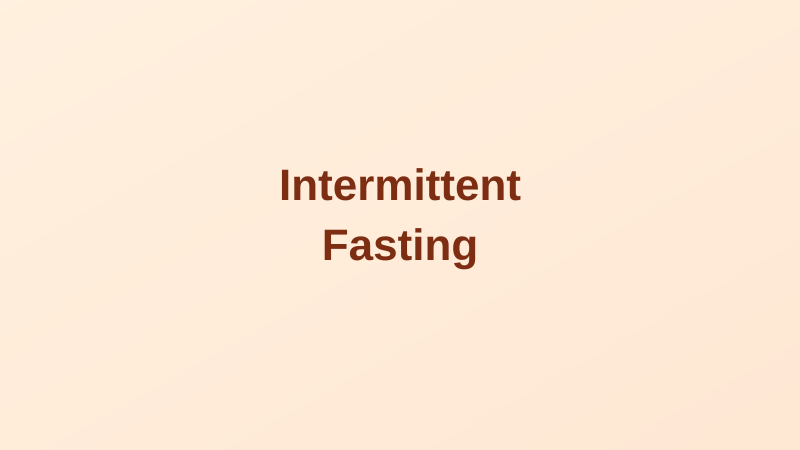

Intermittent Fasting: What the Science Actually Says
Written by Sarah Mitchell
Health & Wellness Writer • Published: April 7, 2026 • 8 min read
Intermittent fasting — cycling between periods of eating and not eating — has become one of the most searched dietary approaches in America. But behind the social media hype, what does the actual science show? The answer is more nuanced than either its evangelists or critics suggest.
According to Google Trends, searches for "intermittent fasting" have grown nearly 10,000% over the past decade, and surveys suggest roughly 1 in 10 American adults have tried some form of it. Yet most people start without understanding the biology, the evidence, or whether it's actually appropriate for them.
What Is Intermittent Fasting?
Intermittent fasting (IF) isn't a single diet — it's a family of eating patterns that share one principle: structured time periods with no or minimal calorie intake. The most common approaches include:
- 16:8 (Time-Restricted Eating): Fast for 16 hours, eat within an 8-hour window. The most popular and sustainable method for most people
- 5:2 Diet: Eat normally 5 days per week; restrict calories to ~500-600 on 2 non-consecutive days
- Alternate Day Fasting: Alternate between regular eating days and very low-calorie days (around 500 calories)
- OMAD (One Meal a Day): Eating all daily calories in a single meal, typically within a 1-2 hour window
What the Research Shows
Weight and Metabolism
A rigorous randomized controlled trial published in the New England Journal of Medicine in 2022 compared time-restricted eating (16:8) to standard calorie restriction in 139 adults with obesity. Both groups lost similar amounts of weight over the year — about 18 lbs — suggesting IF works primarily through calorie reduction rather than any unique metabolic magic (Liu et al., 2022).
However, a meta-analysis of 27 trials published in Obesity Reviews found that intermittent fasting was as effective as continuous calorie restriction for weight loss and may be easier for some people to adhere to over time (Harris et al., 2018).
Blood Sugar and Insulin Sensitivity
This may be where IF shows its strongest independent benefit. Research indicates that time-restricted eating can improve insulin sensitivity, reduce fasting blood glucose, and lower HbA1c levels in people with type 2 diabetes or prediabetes — effects that appear somewhat independent of total weight loss. The NIDDK notes this remains an active research area.
Autophagy — The Cellular Cleanup Process
One of the most scientifically compelling (and overhyped) aspects of fasting is autophagy — a cellular recycling process that clears damaged proteins and organelles. Autophagy increases during fasting states and has been linked in animal studies to longevity and reduced cancer risk. Nobel laureate Yoshinori Ohsumi won the 2016 Nobel Prize in Physiology for this work. However, it's important to note that most autophagy research is in rodents; human clinical evidence is still limited.
Heart Health
Several studies have shown modest improvements in blood pressure, LDL cholesterol, and triglycerides with intermittent fasting. A 2019 study in Cell Metabolism found that time-restricted eating (10-hour window) improved blood pressure, insulin resistance, and cholesterol levels in metabolic syndrome patients without any prescribed calorie restriction (Wilkinson et al., 2019).
A Recent Note of Caution
In 2024, a preliminary study presented at an American Heart Association conference (and widely covered in media) found a potential association between 8-hour time-restricted eating and a 91% higher risk of cardiovascular death. However, this was an observational study using dietary recall data — it could not establish causation, and the findings have not yet been peer-reviewed in full. Many researchers cautioned against overinterpreting the results. This area will benefit from more rigorous, longer-term randomized controlled trials.
Who Should Be Cautious
Intermittent fasting is not appropriate for everyone. The following groups should consult a doctor before starting:
- People with a history of disordered eating (anorexia, bulimia, binge eating disorder)
- Pregnant or breastfeeding women
- People with type 1 diabetes or those taking insulin or sulfonylureas (risk of hypoglycemia)
- Children and adolescents
- People who are underweight
- Those on certain medications that require food
Practical Starting Points
- Start with 12:12: A 12-hour eating window is a gentle introduction with real benefits. Most people already do this between dinner and breakfast
- Prioritize the timing: Research suggests that eating earlier in the day (aligning with sunlight) may be more metabolically beneficial than a late eating window
- Quality still matters: Fasting doesn't compensate for poor food choices during the eating window
- Stay hydrated: Water, plain coffee, and unsweetened tea are generally acceptable during fasting periods
- Expect a 1-2 week adjustment: Hunger patterns normalize as your body adapts
Disclaimer: This article is for informational purposes only and is not medical advice. Before making significant changes to your eating patterns, especially if you have a medical condition or take medications, consult your healthcare provider.
Sarah Mitchell
Sarah is a health and wellness writer focused on making scientific research accessible to everyday readers.